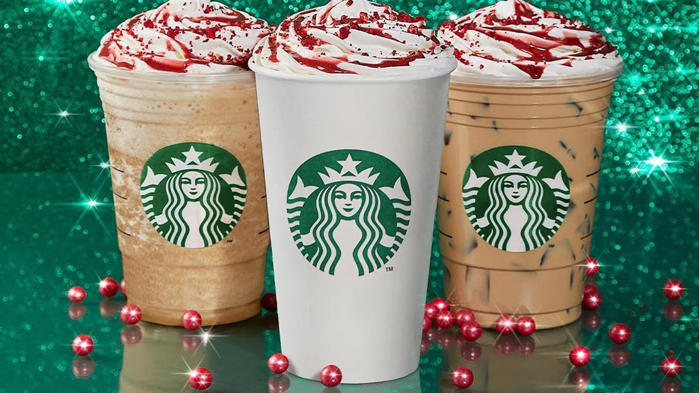

Historia
Starbucks fue fundada en 1971 en Seattle como una pequeña tienda especializada en granos de café tostado y equipos. En 1982, Howard Schultz se unió a la compañía y, inspirado por la cultura del café en Italia, transformó Starbucks en una cadena de cafeterías que ofrecía café preparado en un ambiente acogedor. Esta visión convirtió a Starbucks en un líder global con miles de ubicaciones en todo el mundo.
Filosofía
La filosofía de Starbucks se centra en ofrecer una experiencia excepcional a sus clientes, creando un "tercer lugar" entre el hogar y el trabajo donde las personas pueden relajarse y conectarse. Starbucks también promueve la sostenibilidad, la ética en la cadena de suministro del café, y un fuerte compromiso con las comunidades locales, reflejando su misión de inspirar y nutrir el espíritu humano: una persona, una taza y una comunidad a la vez.
Nuestros Productos!!!
Haz click en cualquier imagen para ver más!!
Frappes Navideños